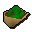

Ugthanki kebab

| Config name | ugthanki_kebab |
| Item id | 1885 |
| Value | 20 gp |
| Weight | 500g |
| Members | Yes |
| Tradeable | Yes |
| Stackable | No |
| Options | Eat |
| Defined in | scripts/skill_cooking/configs/cooking_inv/configs/ugthanki_kebab/ugthanki_kebab.obj |
Ugthanki kebab
A fresh kebab made from ugthanki meat.
How to make
| Skill | Level | XP | Ingredients | Tool | How | Where | Makes |
|---|---|---|---|---|---|---|---|
| Cooking | 1 | 120.0 | use on item | 1 |
Quests
Referenced in scripts
scripts/_test/scripts/cheats/cheat_bank.rs2scripts/player/scripts/consumption/consume.rs2scripts/quests/quest_druidspirit/scripts/ghast.rs2scripts/skill_cooking/scripts/cooking_inv/scripts/ugthanki_kebab/ugthanki_kebab.rs2